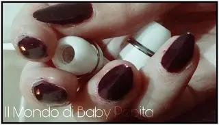
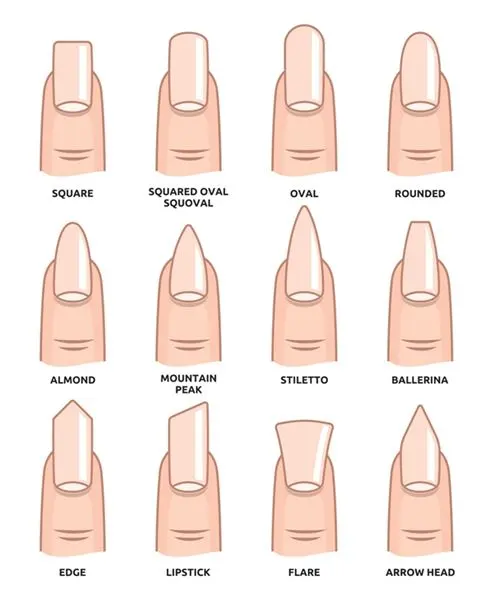
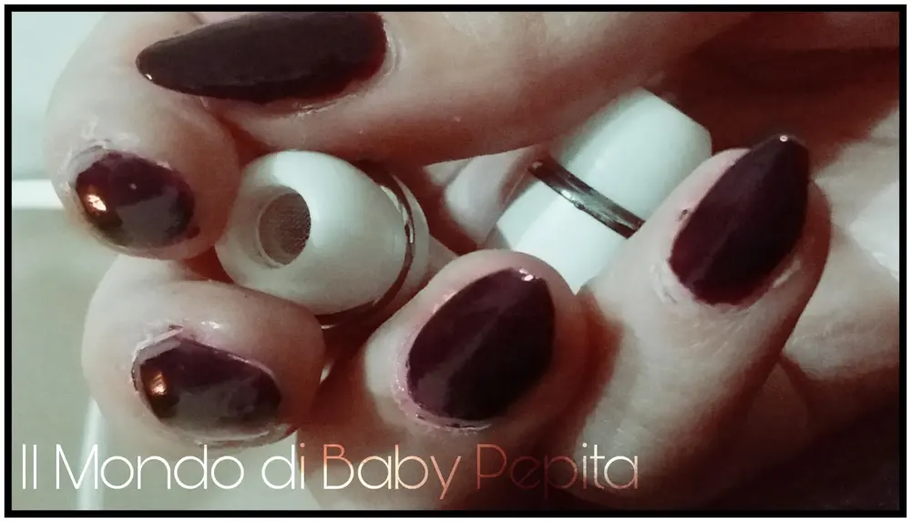
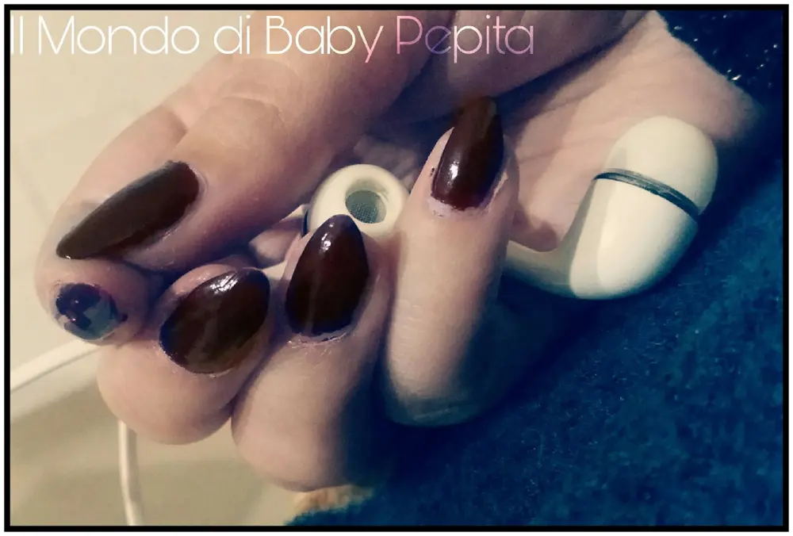
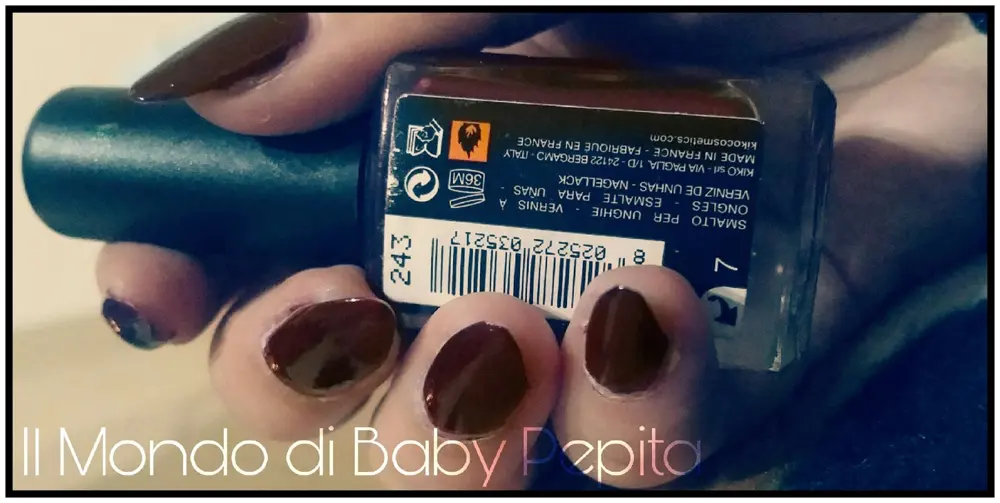

Nail art: KIKO n°243 rosso prugna + cambio forma dell'unghia

Non ho mai seguito le mode, ne tanto meno nelle nail art. Ho sempre seguito il mio istinto, le mie preferenze e soprattutto le mie piccole capacità; perché parliamoci chiaro, ci può piacere tutto ma se sappiamo che non siamo in grado di fare delle cose meglio non provarci nemmeno ahahah
Negli ultimi anni abbiamo visto, anche grazie alle migliaia di onico-tecniche, che si possono portare diverse forme di unghie.


Da sempre personalmente ho portato unghia a forma quadrata; ovvero SQUARE (la realizzazione dalle unghie quadrate è facile perché bisogna semplicemente limare i lati in modo che siano paralleli tra di loro e la base è netta e subito si passa ad una nail art).
Ho cambiato poche, pochissime volte da SQUARE OVAL SQUAVAL ( una forma che si adatta a tutte le manicure, dalla più classica alla più stravagante, giacché nella forma quadrata sono presenti due angoli spesso appuntiti, molte donne hanno la necessità di eliminarli. Così si è pensato di mantenere le linee parallele della forma quadrata e adottare la punta di quella ovale.
Detta così sembra difficile, ma il risultato è veramente molto armonioso e carino). Oppure un paio di volte sono passata a ROUNDED (è la forma più sobria e delicata che non passa mai di moda. Inoltre è ideale per chi vuole delle unghie molto lunghe, così da non esagerare troppo nell'insieme. Rispecchia la forma naturale delle unghie.), sono però sempre tornata alle mie square perchè mi piacevano più di tutte.
TUTTO QUESTO TENGO A PRECISARE CON UNGHIA NATURALI E NESSUNA RICOSTRUZIONE O COLATA, COME ANCHE QUANDO EFFETTUO UNA NAIL ART, E' SEMPRE STATA FATTA A MANO LIBERA (INFATTI, SI NOTA SOPRATTUTTO DALLE IMPERFEZIONI).
Da un pò di tempo a questa parte però, sono stata attirata da questa forma MOUNTAIN PEAK detta anche Ballerina (è sostanzialmente una variante della forma squadrata e, come quest’ultima è difficile da mantenere), in pratica una sorta di punta ovviamente non pungente :D
Ci ho pensato un pò e alla fine ho ceduto anch'io! Ebbene sì, e qualche giorno fa mi sono armata di fresa, lima e smalto e mi sono messa all'opera. . So che non è propriamente perfetta ma mi sono fermata a questa forma perché mi è piaciuta sin da subito!
Il colore:
Volevo un bel colore carico, che risaltasse l'unghia rendendola comunque raffinata e non eccessiva.

Un colore adatto anche al periodo freddo mi è sembrato giusto dare merito ad un ennesimo smalto firmato KIKO.
Il numero 243 - rosso prugna.

Un bel rosso scuro che si adatta ad ogni outfit, con ben due passate possiamo ottenere un colore fantastico. Facile da stendere grazie al pennellino schiacciato. Si asciuga rapidamente restando lucido senza ammattirsi.
Lo possiamo trovare in tutti i negozi kiko che ormai sono in quasi tutta Italia, oppure sul loro sito.
Prezzo: 2,90 €
Quantità: 11 ml